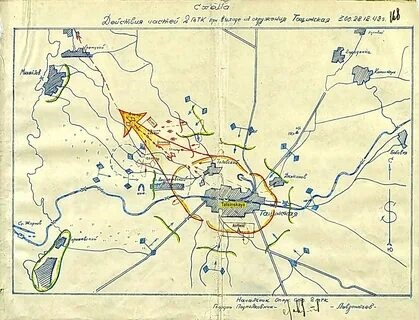

24 декабря 1942 года
Источник: Волгоградская правда от 24.12.1982 года.
Из боевого донесения начальника штаба Сталинградского фронта Верховному Главнокомандующему о срыве контрудара противника и продолжении наступления войск фронта на Котельниковском направлении:
«Войска фронта 24 декабря перешли в наступление в общем направлении на Котельниково и, преодолевая сопротивление противника, продвинулись на 4 – 16 км.»
ОТ СОВЕТСКОГО ИНФОРМБЮРО
Утреннее сообщение 24 декабря.
Юго-западнее Сталинграда наши войска отбивали атаки мотопехоты и танков противника. В результате упорных боев гитлеровцы были выбиты еще из одного населенного пункта. Уничтожено свыше 1000 немецких солдат и офицеров, 15 танков, 63 автомашины, 12 орудий, 18 пулеметов и 4 самолета.
Источник: Волгоградская правда от 24.12.1982 года
Согласно акту о зверствах немецко-фашистских захватчиков: «В день освобождения хутора Жирки Сталинградской области был обнаружен полузарытый и обложенный камнями минометчик Дмитрий Лежанин. Благодаря свидетельским показаниям было установлено, что гитлеровцы после зверских пыток бросили Лежанина в яму и засыпали песком. В таком положении он находился два дня. Когда его извлекли, он был еще жив и в последствии, отправлен в госпиталь на излечение.
Немецко-румынские изверги расстреляли колхозников сельскохозяйственной артели «Основа» А. Урасова, П. Коротокова, Г. Смирнова за то, что они пытались оказать помощь раненым красноармейцам». Акт подписали: старший батальонный комиссар Шмельков, старший лейтенант Бондарев, лейтенант Попков, красноармеец Мавричев. Медсестра Белявская, колхозница Бунеева.
Событие. Тацинский рейд.
Бойцы вспоминают. Подвиг танкового корпуса генерала В.М. Баданова.
Карта

А. Самсонов «Сталинградская битва». «Появление корпуса для немцев было неожиданным. Личный состав аэродрома был еще в землянках. Артиллеристы зенитных частей, прикрывающих аэродром и станцию Тацинскую, не были у орудий. Гарнизон противника мирно спал».
Части корпуса, полностью очистив от врага поселок Тацинская, станцию и аэродром, заняли здесь круговую оборону. В ходе боя был уничтожен гарнизон противника. Среди трофеев было свыше 300 вражеских самолетов, не успевших подняться с аэродрома или захваченных в железнодорожных эшелонах.
Источник: Волгоградская правда от 24 декабря 1982 года.
В стане врага. Вот как писал потом об этом сокрушительном разгроме Курт Штрайти, один из немногих, кто уцелел. «Утро 24 декабря 1942 года. На востоке брезжит серый горизонт. В этот момент советские танки, ведя огонь, внезапно врываются в деревню и на аэродром. Самолеты сразу вспыхивают, как факелы. Всюду бушует пламя. Рвутся снаряды, взлетают в воздух боеприпасы. Мечутся грузовики, а между ними бегают отчаянно кричащие люди. Все, что может бежать, двигаться, лететь, пытается разбежаться во все стороны.
Кто же даст приказ, куда направиться пилотам, пытающимся вырваться из этого ада? Стартовать в направлении Новочеркасска – вот все, что успел приказать генерал. Начинается безумие… Со всех сторон выезжают на стартовую площадку и стартуют самолеты. Все это происходит под огнем и в свете пожаров. Небо распростерлось багровым колоколом над тысячами погибающих, лица которых выражают безумие.
Вот один «Ю-52», не успев подняться, врезается в танк, и оба взрываются со страшным грохотом в огромном облаке пламени.
Вот уже в воздухе сталкиваются «Юнкерс» и «Хейнкель» и разлетаются на мелкие куски вместе со своими пассажирами. Рев танков и авиамоторов смешиваются со взрывами, орудийным огнем и пулеметными очередями в чудовищную симфонию. Все это создает полную картину настоящей преисподней». С занятием советскими войсками ст. Тацинская была перерезана важнейшая железнодорожная коммуникация Лихая- Сталинград, по которой фашистское командование завершало сосредоточение войск группы «Холлдит» и обеспечивало их снабжением всем необходимым для ведения боевых действий.
Р. Я. Малиновский вспоминал: «12 дней понадобилось Манштейну и его ударной группировке, чтобы преодолеть расстояние от Котельниково до реки Мышкова.
Все три дня понадобилось советским войскам, чтобы, перейдя в наступление, сбросить фашистов с рубежей на реке Мышкова, потом на реке Аксай и загнать их назад в Котельниково. Но это было только начало широкомасштабного наступления, предпринятого советским командованием юго-западнее Сталинграда. Мы овладели переправами на реке Мышкова, через которое вскоре прошли наши подвижные соединения. Сбитый с позиций противник начал отход на реку Аксай – Есауловский, прикрываясь сильными арьергардами, главным образом, из румынских частей. Мы понимали, что враг сделает все необходимое, чтобы задержать наступление на этом естественном рубеже. Противник решил силами соединений 57 танкового корпуса срочно создать здесь устойчивую оборону, используя для этого пересеченную местность и населенные пункты, прилегающие к Котельникову. Но и эта попытка врага провалилась. Стремительным ударом подвижных войск, поддержанных нашей авиацией, противник был опрокинут и вынужден в беспорядке отойти за реку».
Таким образом, противнику было нанесено поражение на реке Аксай. Генерал Фридрих Вильгельм фон Меллентин командующий 57–м танковым корпусом вынужден был впоследствии признать, что битва на этой малоизвестной реке Аксай - Есауловский «положила» конец надеждам Гитлера на создание империи и явилась решающим звеном в цепи событий, предопределивших поражение Германии.